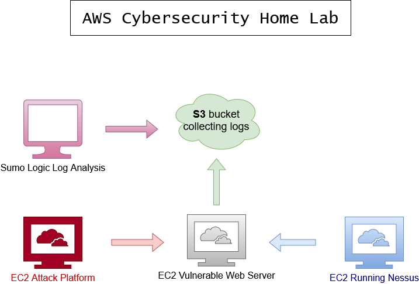

This network map illustrates the design and components of my cybersecurity home lab, including the attack platform, web server, Nessus server, S3 bucket, and Sumo Logic integration.

Lab Setup Process
The primary goal of this cybersecurity home lab is to showcase my skills, technical knowledge, and passion for continuous learning and improvement. This lab serves as a platform to demonstrate my ability to configure, integrate, and analyze diverse security tools while addressing real-world challenges.
Key Components
- Attack Platform: A Kali Linux instance running as a Docker container on an EC2 instance. Configured with tools such as Nmap and Metasploit to simulate attacks on the web server.
- Web Server: A vulnerable web application (DVWA) hosted on an Ubuntu EC2 instance. Configured with Apache2 and MySQL, with logs forwarded to an S3 bucket using AWS CLI and cron jobs.
- Nessus Server: Installed on a separate Ubuntu EC2 instance. Used for conducting vulnerability scans and identifying critical risks on the web server.
- S3 Bucket: Configured to store Apache logs from the web server. Integrated with the Sumo Logic ingestor for log analysis.
- Sumo Logic: Configured to ingest and analyze logs from the S3 bucket. Provides dashboards and alerts for monitoring security events.
Challenges and Solutions
- Kali Linux Setup: Initial configurations were lost when restarting the Docker container. Solution: Committed changes to a custom Docker image to persist configurations and installed essential tools like Nmap and Metasploit.
- Web Server Logging: Logs were not correctly routed to the S3 bucket. Solution: Updated Apache configurations to log to a specific directory and automated synchronization to S3 using a cron job.
- Nessus Installation: The Nessus installation failed on Amazon Linux due to incompatibility. Solution: Launched a new Ubuntu instance, installed Nessus successfully, and verified scans.
- Sumo Logic Integration: Logs initially didn’t appear in Sumo Logic. Solution: Verified S3 permissions, updated the ingestor configuration, and ran test queries to confirm log ingestion.
Future Enhancements
- Integrate additional tools, such as intrusion detection systems (e.g., Snort or Suricata).
- Automate infrastructure setup using Terraform for scalability and reproducibility.
- Simulate advanced attack scenarios for in-depth vulnerability analysis.